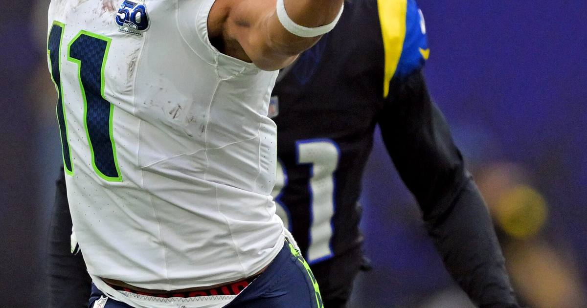

Thursday's ticket hit twice
The Broncos-Seahawks TNF grinder starved the role-player yardage legs — but he set the JSN yardage line himself, and his Thursday ticket hit twice.

Disclosure: this post contains affiliate links. I earn a commission on qualifying purchases.
He set the JSN yardage line himself. And on Thursday night in Denver, against a Broncos defense playing like its season depended on it, Jaxon Smith-Njigba kept clearing it — 12 catches, 134 yards on 16 targets, the reigning Offensive Player of the Year doing OPOY things in a 17-14 overtime win for Denver. The ticket hit twice.
A defensive grinder, exactly as feared
The unit's read was that this would be a defensive grinder that starved the role-player yardage legs — and the final line proves it. The Broncos won despite producing just 168 yards of total offense on the night. Bo Nix went 17-of-27 for 107 passing yards, was pressured all night, and needed a 53-yard Wil Lutz field goal in overtime to win it after Sam Darnold threw his second interception of the night (this one to Ja'Quan McMillian on the first OT possession).
On the other side, Denver's defense sacked Darnold five times and hit him 17 times. This was the kind of game where every non-JSN yardage prop was fighting for its life — exactly the "defensive grinder" script.
The anchor that cleared everything
Smith-Njigba's stat line from the USA TODAY live blog:
Receptions: 12
Targets: 16
Receiving yards: 134
Longest reception: 32
Touchdowns: 0
He put up 134 receiving yards in a game where Seattle had 353 total yards and Denver had 168. When one receiver accounts for nearly 40% of an offense's yardage in a slugfest, that's not a hot hand — that's a guy you bet on with conviction. He set the line himself, and the line got cleared.
Source: Broncos vs. Seahawks live updates, stats, highlights — USA TODAY; Broncos OT interception sets up winning field goal — Reuters.
Watch
Source: Seattle Seahawks vs Denver Broncos Game Highlights | 2026 NFL Season Week 6 — NFL (official channel). Full 20:38 highlights of the 17-14 overtime TNF game: Lutz's game-winning 53-yarder, McMillian's OT pick, and JSN's 134-yard night.
Gear up: [Fanatics](https://fanatics.93n6tx.net/WOLjqe) via Fanatics